💡 그림 속 빨간 테두리가 눌러야 할 곳입니다.
1. 처음 시작하기
모든 회원- 휴대폰으로 https://wxfc-manager.github.io 에 들어갑니다. (위챗 단톡방 링크를 눌러도 됩니다)
- 위쪽의 [가입 신청]을 누릅니다.
- 실명과 비밀번호(4자 이상)를 두 번 입력하고 아래 [가입 신청] 버튼을 누릅니다.
- 회장이 승인하면 [로그인]에서 같은 이름·비밀번호로 들어갈 수 있습니다.

위챗 안에서 열었다면 오른쪽 위 ··· → '브라우저로 열기' 후에 추가하세요.
자동 로그인 · 중복 로그인
- 한 번 로그인하면 [로그아웃]을 누르기 전까지 자동으로 로그인됩니다.
- 한 사람은 한 기기에서만 로그인됩니다. 다른 휴대폰(또는 다른 브라우저)에서 로그인하면 이전 기기는 자동으로 로그아웃됩니다.
- 내가 로그인한 적 없는데 로그아웃되었다면, 누군가 내 비밀번호로 들어간 것일 수 있습니다. [내정보] → [비밀번호 변경]을 바로 하세요.
2. 홈 화면
모든 회원로그인하면 처음 보이는 화면입니다.
- 현재 잔액: 회비 수입에서 지출을 뺀 금액이 자동으로 계산됩니다.
- 공지: 회장·총무가 올린 공지입니다.
- 내가 처리할 일: 운영진에게만 보입니다. 내 결재가 필요한 일이 여기 뜹니다.
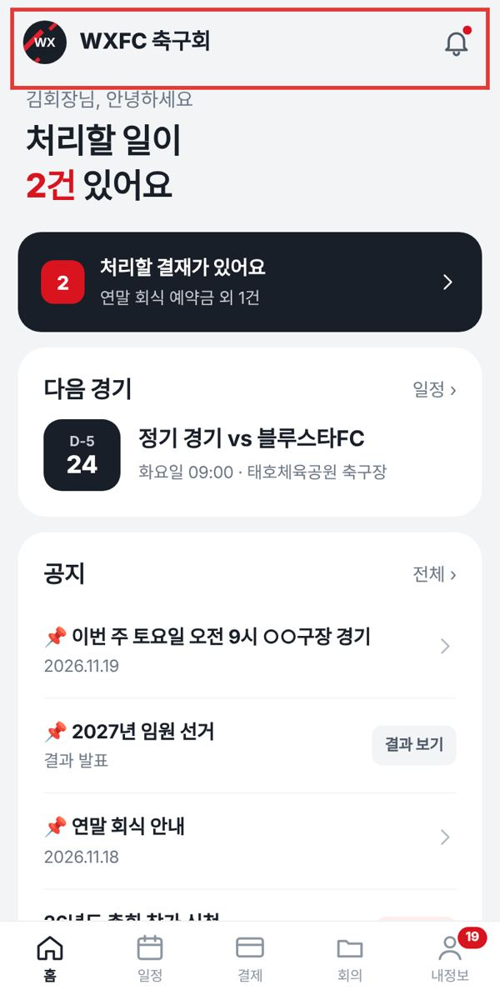
아래쪽 메뉴
| 🏠 홈 | 잔액·공지·할 일 |
|---|---|
| 📅 일정 | 경기 일정 캘린더 |
| 💳 결제 | 돈을 쓴 내역 전체 |
| 🗓 회의 | 회의 안건·회의록 |
| 👤 내정보 | 맨 위에 내 회비·최근 알림 요약, 아래 내 메뉴 버튼(알림·내 회비·비밀번호·中文·설명서·CSV)과 관리 버튼(홈 공지·회원 관리·영상 연동·백업·회장 인계, 권한 있는 사람만) |
홈 화면 바로가기
| 💰 회비 | 내 회비와 전체 회원 납부 현황 |
|---|---|
| 📊 결산 | 월별·연간 수입·지출 |
| 💬 요청사항 | 회원 건의·요청 |
| 👥 조직·회칙 | 운영진 명단, 회칙 파일 |
| 🎥 영상 보기 | XbotGo 경기 영상 목록 (10개씩) |
| 📖 설명서 | 이 사용 설명서 |
2-1. 경기 일정 (캘린더)
보기: 모든 회원 등록: 운영진아래 메뉴 [📅 일정]에서 달력으로 경기 일정을 봅니다. 초록 점이 있는 날이 경기 날입니다.
- ‹ › 버튼으로 달을 넘깁니다.
- 날짜를 누르면 그날 경기가 아래에 나옵니다. 그 아래에는 다가오는 경기 목록이 있습니다.
- 경기를 누르면 시간, 구장, 메모가 보이고, [🗺 고덕지도에서 위치 보기]로 위치를 확인할 수 있습니다.
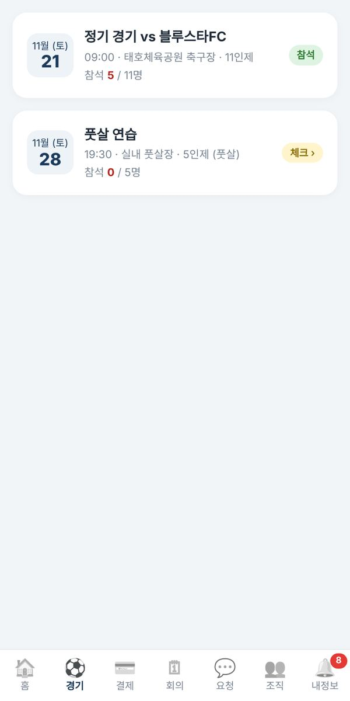
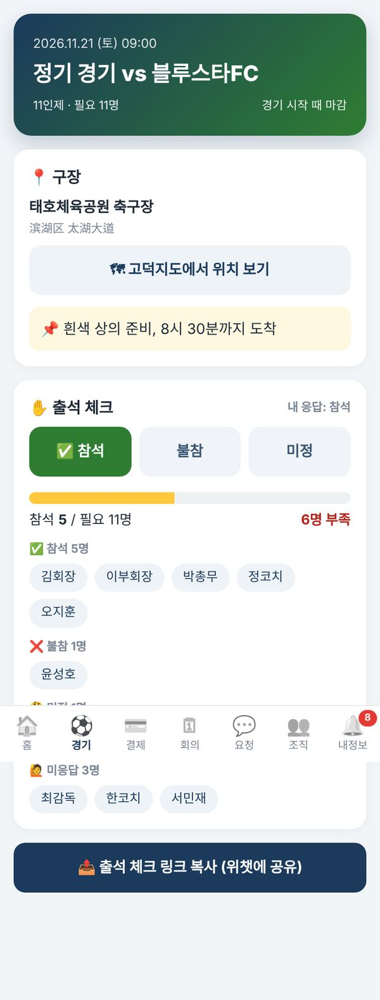
경기 등록하기 운영진
- [📅 일정] → 오른쪽 아래 [+ 경기 등록]
- 경기 이름, 상대팀, 날짜·시간, 경기 방식(11인제·9인제 등)을 적습니다.
- 구장 이름을 적습니다. 전에 쓴 구장은 목록에서 고르면 주소도 자동으로 채워집니다.
- (선택) 고덕지도 앱에서 구장 → 공유 → 링크 복사 후 '고덕지도 공유 링크' 칸에 붙여넣으면 정확한 위치가 열립니다.
- [등록하고 회원에게 알림] → 경기 화면의 [📤 경기 일정 공유]로 단톡방에 알립니다.
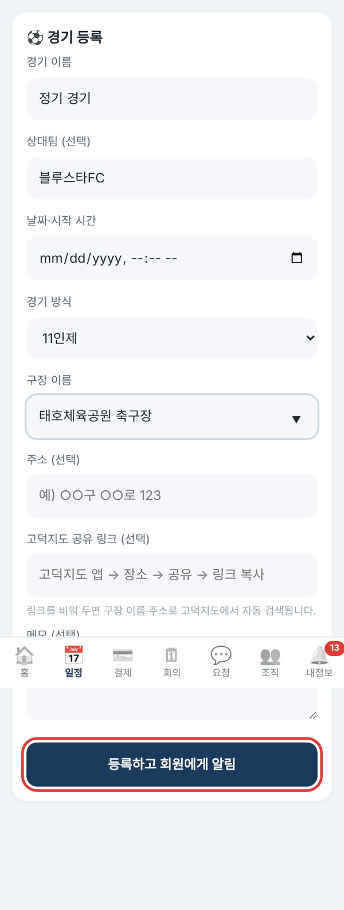
index.html의 const ATTEND = false;를 true로 바꾸면 다시 나타납니다.3. 결제
보기: 모든 회원 올리기: 운영진돈을 쓸 때는 반드시 아래 순서를 거칩니다.
일반 회원은 [결제] 메뉴에서 모든 내역을 볼 수만 있습니다.
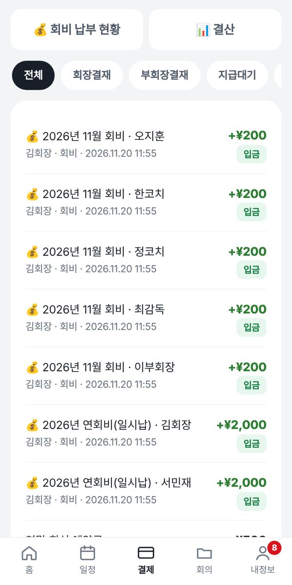
① 결제안 올리기 운영진
- [결제] 메뉴 → 오른쪽 아래 초록색 [+ 결제안]
- 제목, 항목, 금액, 사유를 적고, 영수증·견적 사진이 있으면 [+]를 눌러 첨부합니다.
- [결제안 올리기]를 누르면 회장에게 알림이 갑니다.
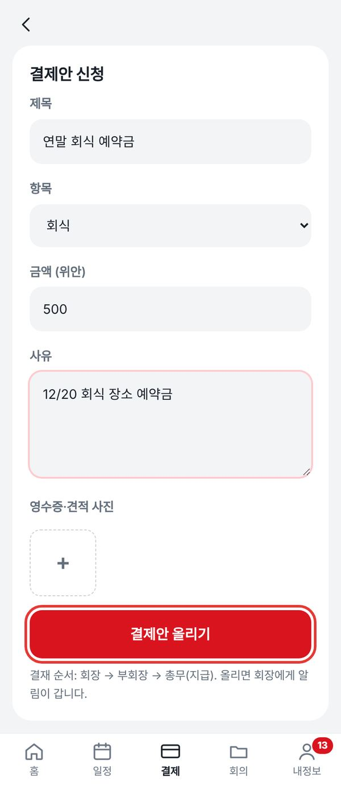
② 회장 승인 회장
- 홈의 '내가 처리할 일' 또는 알림에서 해당 결제안을 엽니다.
- 내용을 확인하고 [승인]을 누릅니다. 안 되는 경우 [반려]를 누르고 이유를 적습니다.

③ 부회장 승인 부회장
회장이 승인하면 부회장에게 알림이 갑니다. 똑같이 [승인] 또는 [반려]를 누릅니다.

④ 총무 송금 → 지급완료 총무
- 부회장까지 승인되면 총무에게 '송금 요청' 알림이 갑니다.
- 총무 개인 위챗으로 해당 금액을 송금합니다.
- 위챗 송금 완료 화면을 캡처합니다.
- 결제안을 열고 [+]를 눌러 캡처 사진을 첨부합니다.
- [지급완료]를 누릅니다. 이때 잔액에서 자동으로 빠집니다.
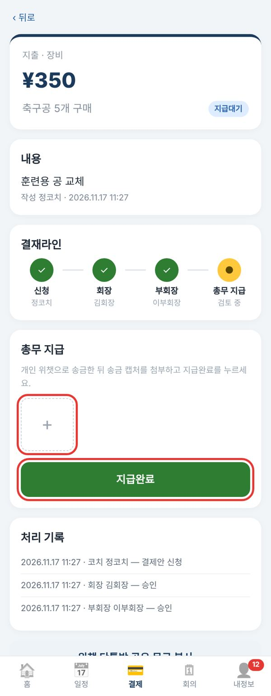
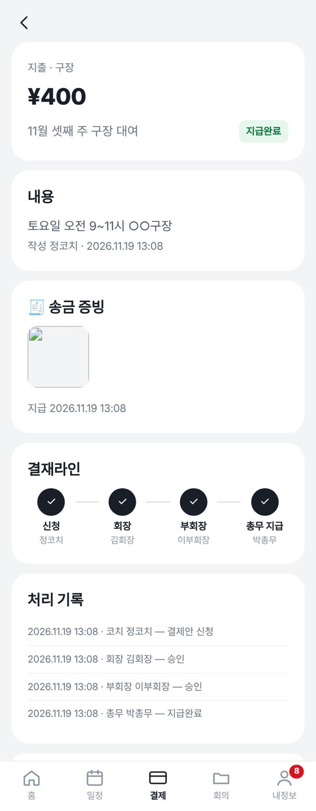
⑤ 회비 등 수입 등록 회장·총무
[결제] → 파란색 [+ 수입 등록] → 제목(예: 11월 회비)과 금액 입력 → 등록. 바로 잔액에 더해집니다.
3-1. 월별·연간 결산
모든 회원홈 화면의 금액은 처음부터 지금까지 누적입니다. 월별·연도별 금액은 결산 화면에서 봅니다.
- 홈 화면 잔액 아래 [📊 월별·연간 결산 ›] (또는 [결제] 메뉴 맨 위 버튼)
- 오른쪽 위에서 연도를 고르고, [연간] [1월] [2월] … 중 원하는 기간을 누릅니다.
- 기간 수입·지출, 전기 이월(그 전까지 남은 돈), 기말 잔액, 항목별 지출, 내역이 나옵니다.
- 연말 정산: 연도를 고르고 [연간] → [결산 요약 복사]로 단톡방에 공유하거나 [엑셀(CSV) 내려받기].
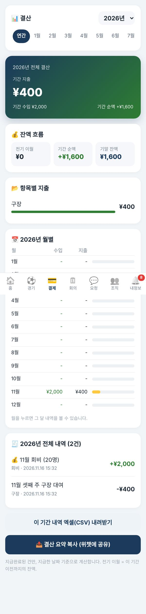
3-2. 회비 납부 현황
보기: 모든 회원 체크: 회장·총무회원별로 이번 달 회비를 냈는지 한눈에 봅니다. 홈 화면 잔액 아래에 이번 달 내 회비 상태가 보이고, [👤 내정보]와 회비 화면 맨 위의 🙋 내 회비 칸에서 1~12월 내 납부 상태를 볼 수 있습니다 (✓ 납부, 🏅 연납, 미납, 면제, ⏸ 일시중단, - 가입 전).
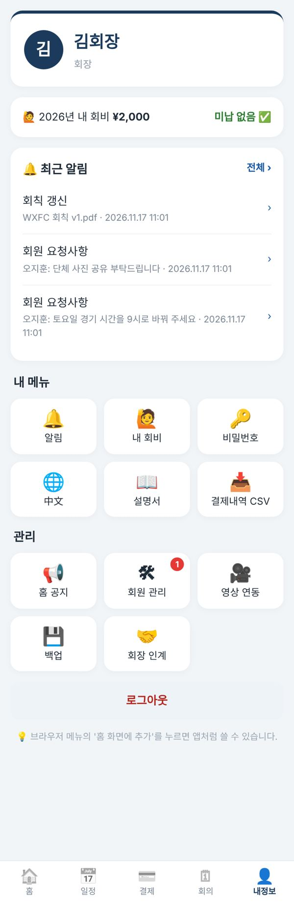
- [결제] → [💰 회비 납부 현황] (또는 홈의 '이번 달 회비' 칸)
- ‹ ›로 달을 고릅니다.
- 회장·총무 처음 한 번 월 회비, 연납 금액(1년 일시납, 예: 2000), 연납 기한을 적고 [설정 저장].
- 회장·총무 회비를 받으면 그 회원 옆 칸을 '납부'로 바꿉니다. 사정이 있는 회원은 '면제'.
- 회장·총무 1년 회비를 한 번에 낸 회원은 '연납'을 고릅니다. 연회비가 수입으로 한 번 등록되고, 그해 모든 달이 자동으로 납부로 표시됩니다. 연납한 회원은 🏅 연회비 완납 칸에 이름이 나옵니다.
- [🔔 미납자에게 알림 보내기]로 안 낸 사람에게만 알림, [📤 납부 현황 복사]로 단톡방 공유.
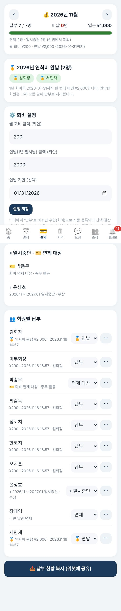
🎫 면제 대상 · ⏸ 일시중단 회장·총무
회원 이름 옆 [⋯]을 누르면 설정 창이 열립니다.
- 🎫 회비 면제 대상: 총무처럼 회비를 아예 안 내는 사람. '매달 자동으로 면제'를 체크하고 사유를 적은 뒤 [면제 대상 저장]. 매달 자동으로 '면제 대상'으로 표시됩니다.
- ⏸ 일시중단: 부상·출장 등으로 잠시 회비를 멈출 때. 시작 달과 끝 달을 고르고(기본 3개월) 사유를 적은 뒤 [일시중단 추가]. 기간은 자유롭게 정할 수 있고, 일찍 끝내려면 목록에서 [삭제] 후 다시 추가합니다.
- 면제·일시중단인 사람은 미납 인원에서 빠지고, 미납 알림도 가지 않습니다. 화면 위 '⏸ 일시중단 · 🎫 면제 대상' 칸에서 모두가 볼 수 있습니다.
- '면제'(이번 달만)는 그 달 한 번만 빼 줄 때 씁니다.
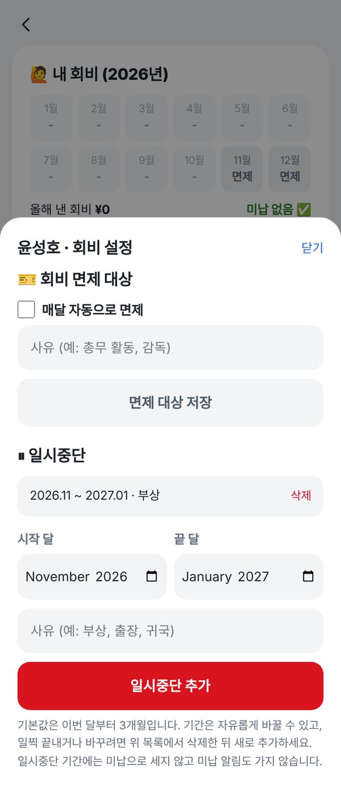
4. 회의 안건과 회의록
보기: 모든 회원 (확정된 회의만) 올리기: 운영진
① 안건 올리기 운영진
- [회의] → 오른쪽 아래 [+ 회의 안건]
- 제목, 날짜, 안건 내용을 적고 자료(사진·PDF·문서)가 있으면 [+ 파일 첨부]
- [결재 올리기]
② 결재 부회장 → 회장
알림을 받으면 회의를 열고 [승인] 또는 [반려]를 누릅니다.

③ 회의록 쓰기 운영진
회장이 승인한 회의를 열고, 회의록 칸 오른쪽 [작성·수정] → 회의 결과 입력 → [저장하고 회원에게 알림].
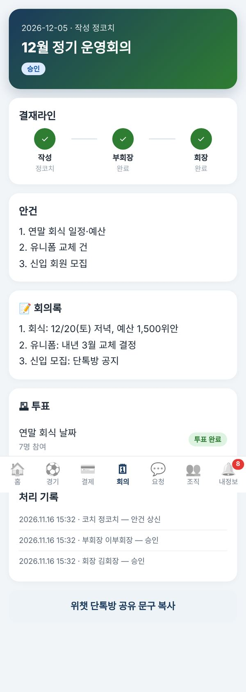
4-1. 투표 (기명)
투표: 모든 회원 만들기·마감: 운영진회의에서 정할 일을 회원 투표로 결정할 때 씁니다. 기명 투표라서 누가 무엇을 골랐는지 모두에게 보입니다.
① 투표 만들기 운영진
- 확정(승인)된 회의를 열고 아래쪽 🗳 투표 칸의 [+ 투표 만들기]
- 투표 제목과 선택지를 한 줄에 하나씩 적습니다. 마감 시간은 필요하면 정합니다.
- [투표 시작하고 회원에게 알림]
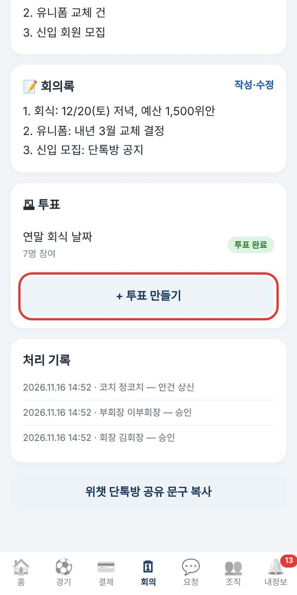
② 위챗 단톡방에 공유 운영진
투표 화면 맨 아래 [📤 투표 링크 복사] → 위챗 단톡방에 붙여넣기.
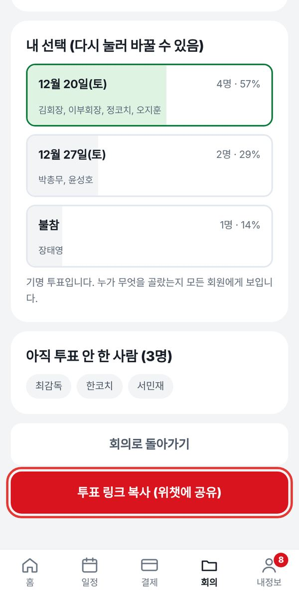
③ 투표하기 모든 회원
- 단톡방의 링크를 누릅니다. (로그인이 안 되어 있으면 로그인 후 바로 투표 화면으로 갑니다)
- 원하는 선택지를 누르면 끝입니다. ✅ 표시가 내 선택입니다.
- 마감 전에는 다른 선택지를 눌러 바꿀 수 있습니다.
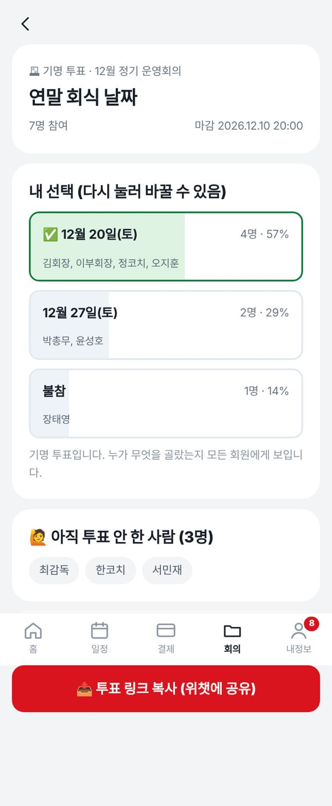
④ 마감 운영진
정한 마감 시간이 지나면 자동으로 닫힙니다. 직접 닫으려면 투표 화면의 [투표 마감하기]. 마감되면 모든 회원에게 알림이 갑니다.
5. 요청사항
모든 회원일반 회원이 운영진에게 건의하거나 요청할 때 씁니다. 일반 회원이 글을 쓸 수 있는 유일한 곳입니다.
- 홈 화면 바로가기 [💬 요청사항] → [+ 요청하기]
- 제목과 내용을 적고 [보내기] → 운영진 모두에게 알림이 갑니다.
- 운영진이 답변하면 나에게 알림이 옵니다.

답변하기 운영진
요청 아래 칸에서 상태(접수 / 처리중 / 완료)를 고르고 답변을 적은 뒤 [답변 저장].
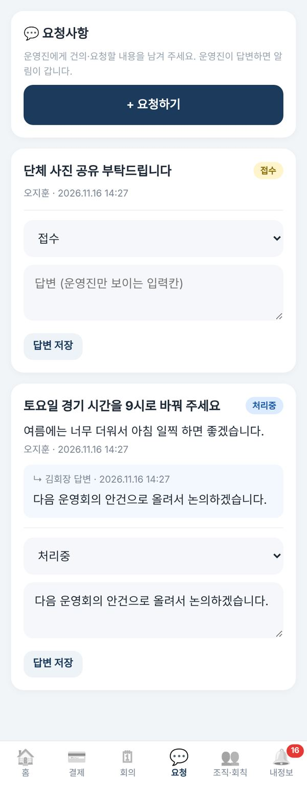
6. 조직도와 회칙
모든 회원홈 화면 바로가기 [👥 조직·회칙]에서 운영진 명단과 회칙 파일을 볼 수 있습니다. 회칙은 [열기]를 누르면 됩니다.
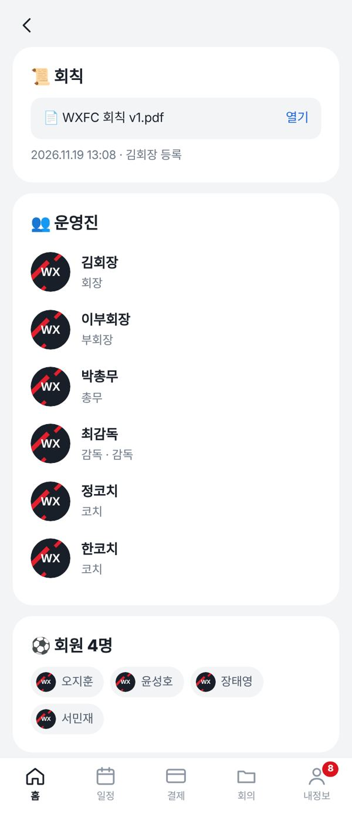
회칙 올리기·바꾸기 회장·총무
같은 화면의 [회칙 파일 업로드](또는 [새 회칙으로 교체]) → 휴대폰에 저장된 PDF·워드 파일 선택. 모든 회원에게 알림이 갑니다.
7. 회장 전용: 회원 관리
회장[내정보] → 관리 → [🛠 회원 관리] 버튼을 누릅니다. 가입 대기자가 있으면 버튼에 빨간 숫자가 붙습니다.
각 회원 옆 🎥 버튼을 누르면 영상 관리 권한(새 영상 가져오기 · 영상 제목/경기 연결 · 숨기기)을 주거나 뺍니다. 초록색이면 권한이 있습니다. 회장은 항상 가능합니다.
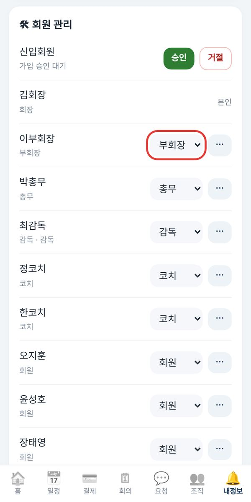
| 가입 승인 | '가입 승인 대기' 회원의 [승인] (모르는 사람은 [거절]) |
|---|---|
| 운영진 지정 | 이름 옆 칸을 눌러 부회장 / 총무 / 감독 / 코치 / 회원 중 선택 |
| 직책 이름 | [⋯] → [✏️ 직책 이름 변경] (예: 경기이사) |
| 비밀번호 초기화 | [⋯] → [🔑 비밀번호 초기화] → 새 비밀번호를 정해서 본인에게 알려 주기 |
| 회원 삭제 | [⋯] → [회원 삭제] (탈퇴한 회원) |
| 💾 전체 백업 | [내정보] → [💾 백업] → [💾 전체 백업 받기] → 휴대폰에 파일 저장. 한 달에 한 번 받아서 위챗 '파일 전송 도우미'나 클라우드에 보관 (위챗 안에서 안 되면 브라우저로 열기) |
| 저장 공간 | 같은 칸에 사용량 / 1024MB가 보입니다. 80%를 넘으면 빨간색으로 알려 줍니다 |
| 홈 공지 | 같은 화면의 홈 공지 칸에 쓰고 [공지 저장] |
권한 정리
| 일반 회원 | 운영진 | |
|---|---|---|
| 모든 내역 보기 | ✅ | ✅ |
| 요청사항 쓰기 | ✅ | ✅ |
| 투표하기 | ✅ | ✅ |
| 경기 등록·수정 | ❌ | ✅ |
| 투표 만들기·마감 | ❌ | ✅ |
| 결제안·회의 안건 올리기 | ❌ | ✅ |
| 결재 | ❌ | 회장·부회장 |
| 지급완료 | ❌ | 총무 |
| 영상 가져오기·정리 | 회장이 🎥 지정 시 | 회장 + 🎥 지정된 사람 |
| 영상 동기화 키 만들기 | ❌ | 회장·부회장 |
7-1. 운영진 알림 앱 (안드로이드)
운영진 · 안드로이드폰결재 요청·송금 요청·요청사항이 오면 휴대폰 상단에 팝업 알림이 뜨는 운영진 전용 앱입니다. 중국에서는 구글 알림이 막혀 있어서, 앱이 1분마다 새 알림을 직접 확인합니다 (최대 1분 늦게 올 수 있음).
① 설치
- 휴대폰 브라우저(삼성 인터넷·크롬)로 사이트에 로그인 → [내정보] → 내 메뉴 [📱 알림 앱] (안드로이드 휴대폰의 운영진에게만 보임)
또는 주소창에wxfc-manager.github.io/app/wxfc.apk - 다운로드가 끝나면 [열기] → '출처를 알 수 없는 앱' 안내가 나오면 [설정] → 이 출처 허용 켜기 → 뒤로 가서 [설치]
- 'Play 프로텍트' 경고가 뜨면 [세부정보 더보기] → [무시하고 설치] (스토어에 올리지 않은 앱이라 나오는 안내입니다)
② 처음 실행
- 앱을 열면 알림 허용 → [허용]
- 배터리 사용 최적화 해제 창이 뜨면 → [허용]
- 앱 안에서 평소처럼 로그인합니다.
- 휴대폰 상단에 'WXFC 알림 대기 중'이 보이면 완료입니다.
③ 갤럭시 배터리 설정 (알림이 끊기지 않게, 꼭 하세요)
- 설정 → 애플리케이션 → WXFC → 배터리 → '제한 없음'
- 설정 → 배터리 → 백그라운드 사용 제한 → '사용하지 않는 앱을 절전 상태로 전환' 끄기 (또는 '절전 예외 앱'에 WXFC 추가)
주의
- 운영진은 이 앱으로만 로그인하세요. 위챗이나 브라우저에서 같은 계정으로 로그인하면 앱이 로그아웃되고 '다시 로그인 필요' 알림이 옵니다. 앱을 열어 다시 로그인하면 됩니다.
- 잠금 화면에는 알림 내용이 숨겨지고 'WXFC 새 알림'으로만 보입니다 (보안).
- 앱 안에서는 백업·엑셀 내려받기가 안 됩니다. 이것은 휴대폰 브라우저에서 하세요.
- 앱 업데이트: 새 버전이 나오면 기존 앱을 삭제한 뒤 새로 설치하세요 (보안을 위해 매번 새 서명 키를 쓰기 때문). 앱은 사이트를 그대로 보여주므로 사이트 기능이 바뀌어도 앱 업데이트는 거의 필요 없습니다.
- 아이폰은 지원하지 않습니다.
7-2. 🎥 XbotGo 경기 영상 자동 연동
보기: 모든 회원 설정: 회장·부회장 영상 관리: 회장 + 회장이 지정한 사람XbotGo 클라우드에 올라간 영상을 하루 2번(11시·21시) 자동으로 가져와, 같은 날 경기 일정에 연결합니다. 회원은 홈 화면 [🎥 영상 보기] 버튼(또는 📅 일정 → [🎥 경기 영상 보기])이나 경기 화면에서 바로 봅니다. 영상 목록은 10개씩 페이지로 나뉩니다.
보는 방법 모든 회원
- 영상을 누르면 사이트 안에서 재생됩니다. 영상 안의 재생바로 이동하고, 아래 ⏪ 10초 / 10초 ⏩, 0.5× ~ 2× 속도 버튼을 쓸 수 있습니다.
- 원본 화질이라 데이터를 많이 씁니다. 와이파이에서 보세요.
처음 설정 회장·부회장
- 사이트 [내정보] → 관리 → [🎥 영상 연동] → [🔑 동기화 키 새로 만들기] → 나온 키를 복사해 둡니다 (한 번만 보임).
- 같은 칸 [🔒 XbotGo 비밀번호 → MD5 변환] → XbotGo 비밀번호 입력 → [변환] → 나온 32자리를 복사해 둡니다. (비밀번호는 휴대폰 안에서만 변환되고 저장·전송되지 않습니다)
- 휴대폰 브라우저(데스크톱 사이트 켜기)로
github.com/WXFC-Manager/wxfc-manager.github.io→ Settings → Secrets and variables → Actions → New repository secret 에서 3개를 만듭니다.Name Secret (값) XBOTGO_PHONEXbotGo 로그인 전화번호 (숫자만) XBOTGO_PW_MD52번에서 만든 32자리 WXFC_SYNC_KEY1번에서 만든 키 - 같은 저장소 Actions → xbotgo-sync → Run workflow를 눌러 바로 한 번 실행해 봅니다.
- 1~2분 뒤 사이트 [내정보] → [🎥 영상 연동]에 '연동된 영상 ○개 · 마지막 동기화 ✅'가 보이면 완료입니다.
영상 관리자가 할 수 있는 것 회장 + 지정된 사람
영상 관리 권한은 회장이 [내정보] → [🛠 회원 관리]에서 회원 옆 🎥 버튼으로 줍니다.
- 영상 화면 아래 ✏️ 영상 정보에서 제목(예: 전반전)을 붙이거나, 연결된 경기를 바꾸거나, 영상을 숨길 수 있습니다. (XbotGo 원본은 그대로)
- 경기 시작 2시간 전 ~ 5시간 후에 찍힌 영상은 그 경기에 자동 연결됩니다. 경기 일정이 없으면 '경기 영상' 목록에만 나옵니다.
- [🔄 새 영상 가져오기] (홈 → [🎥 영상 보기] 화면 맨 아래): 영상을 막 올렸을 때 누르면 10~20분 안에 가져옵니다. 평소에는 8시간마다 자동으로 가져옵니다.
- XbotGo에서 편집한 영상도 클라우드에 올라가 처리가 끝나면 똑같이 가져옵니다.
XBOTGO_PW_MD5 값을 바꿔 주세요. 인수인계 때는 새 회장이 1~3번을 다시 하면 됩니다.8. ★ 인수인계 방법
회장이 바뀔 때 꼭 하세요인수인계는 두 가지입니다. ①은 버튼 하나, ②는 고장 대비용입니다.
① 프로그램 안 회장 인계 (1분)
- [내정보] → 관리 → [🤝 회장 인계]
- '새 회장 선택'에서 다음 회장을 고릅니다.
- [회장 인계하기] → 확인. 나는 자동으로 일반 회원이 됩니다.
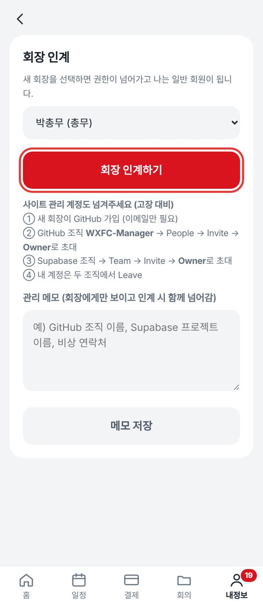
총무·부회장·감독·코치가 바뀔 때는 회장이 회원 관리에서 역할만 바꾸면 됩니다.
② 사이트 관리 계정 넘기기 (10분, 고장 대비)
사이트는 GitHub(화면)과 Supabase(데이터) 두 곳에 있습니다. 평소에는 들어갈 일이 없지만, 고장 났을 때를 위해 관리자를 넘겨 둡니다.
새 관리자가 할 일
- github.com 에서 회원가입 (이메일만 있으면 됨, 휴대폰 번호 불필요)
- 가입한 GitHub 아이디를 이전 관리자에게 알려 줍니다.
이전 관리자가 할 일
- GitHub:
github.com/orgs/WXFC-Manager/people접속 → [Invite member] → 새 관리자 아이디 입력 → 역할 Owner → 초대 - Supabase:
supabase.com/dashboard→ 왼쪽 위 조직 이름 → Team → [Invite] → 새 관리자 이메일 → 역할 Owner → 초대 - 새 관리자가 두 곳의 초대 메일에서 [수락] (Supabase는 'Continue with GitHub'로 로그인)
- 수락이 끝난 것을 확인한 뒤, 이전 관리자는 두 곳에서 Leave(나가기)
9. 문제가 생겼을 때
| 증상 | 해결 |
|---|---|
| '서버가 응답하지 않습니다' / 계속 '불러오는 중' | 사이트 관리자가 supabase.com/dashboard → wxfc 프로젝트 → 'Paused'라고 되어 있으면 [Restore] 버튼. 몇 분 뒤 다시 접속. |
| 갑자기 로그아웃됨 | 다른 기기(또는 위챗↔브라우저)에서 로그인하면 이전 쪽은 로그아웃됩니다. 본인이 아니라면 비밀번호를 바꾸세요. |
| 운영진 앱 알림이 안 옴 | 상단에 'WXFC 알림 대기 중'이 있는지 확인 → 없으면 앱을 한 번 열기. 갤럭시 배터리 설정(7-1 ③)을 다시 확인. 다른 곳에서 로그인했다면 앱에서 다시 로그인. |
| 오랜만에 들어갔더니 로그아웃됨 | 보안을 위해 로그인은 180일이 지나면 만료됩니다. 다시 로그인하세요. |
| '5번 틀려 잠겼습니다' | 보안을 위해 10분간 잠깁니다. 10분 뒤 다시 시도하거나, 비밀번호가 기억나지 않으면 회장에게 초기화를 요청하세요. |
| 로그인이 안 됨 | 이름은 가입할 때와 똑같이(띄어쓰기 포함). 비밀번호를 잊었으면 회장에게 초기화 요청. |
| '승인 대기 중입니다' | 회장이 아직 가입을 승인하지 않았습니다. 회장에게 알려 주세요. |
| 사진·파일이 안 올라감 | 파일 하나가 20MB를 넘으면 안 됩니다. 와이파이에서 다시 시도. |
| 위챗 안에서 파일 저장이 안 됨 | 오른쪽 위 ··· → '브라우저로 열기' 후 다시 시도. |
| 사이트가 아예 안 열림 | 잠시 후 다시 시도. 계속 안 되면 VPN을 켜거나 끄고 시도. |